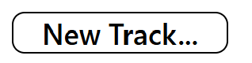
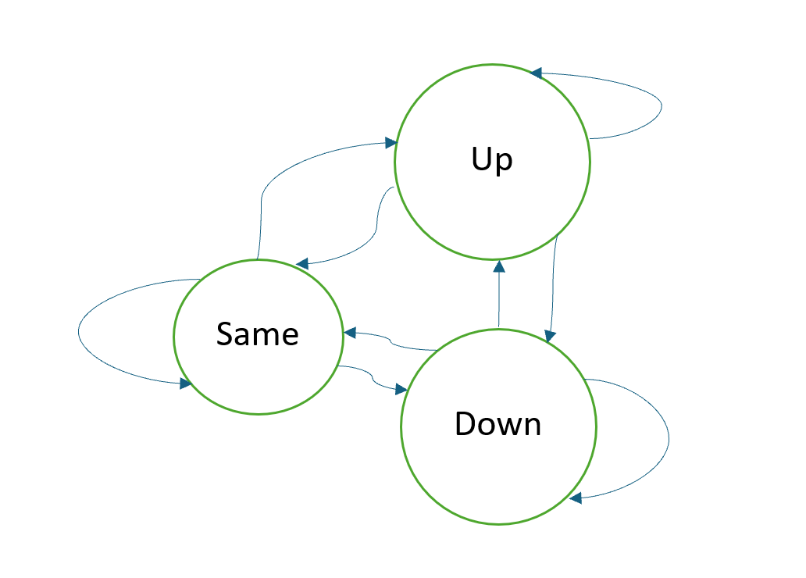
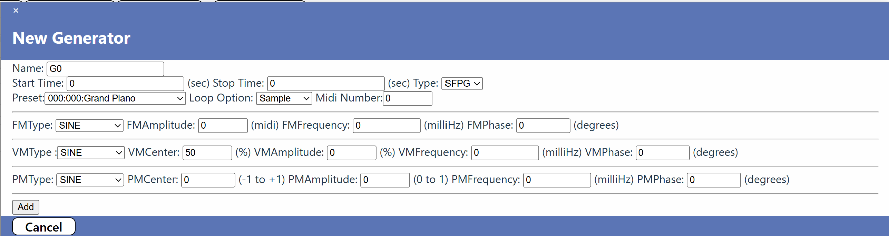
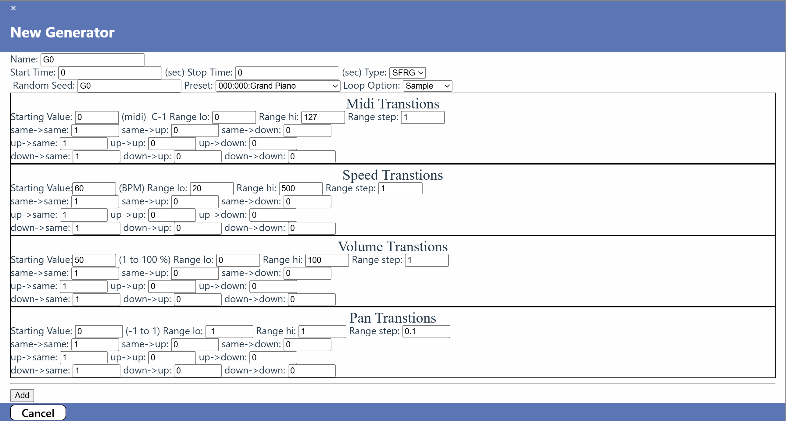
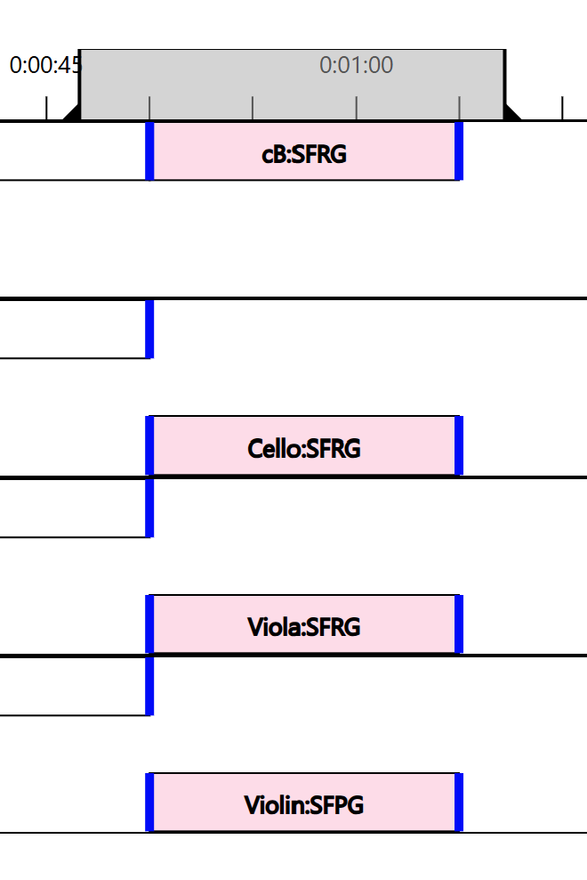
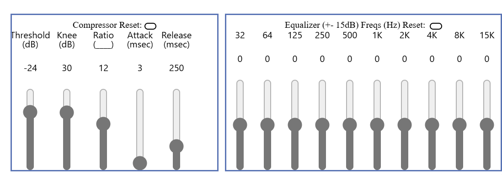
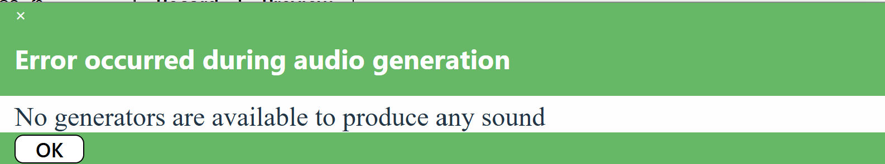

Table of Contents
The Computer Music Generator (CMG) application was inspired by the book Formalized Music: Thought and Mathematics in Composition, by Iannis Xenakis, which I read many years ago and am just getting around to implementing something. It implements some of the features that Xenakis layout and introduces some other concepts. It will be enhanced as I locate other computer music generation concepts, most notably the use of the Euclidean algorithm to implement rhythm.
The features of the CMG include:
An example of a composition in progress is shown here with the various areas of the screen notated:
CMG files are handled by the File Menu Items:

When CMG starts, it has the structure of a new file with no SoundFont file, default room compressor and equalizer settings, and no tracks or generators. At any time, the menu item New File... can be selected to clear the existing workspace. If changes have been made to the workspace since the last save, you will prompted to confirm that you want to delete these changes without saving:

*Note: The CMG screen header shows the name of the file currently being edited. If changes have been made since the last save, an asterisk (*) will follow the file name.
CMG files are created by accessing the menu item Save File... or by pressing ctrl-s on the keyboard. Files may be placed anywhere that they can be accessed within the file system. Files are saved with a .cmg extent. If the file already exists, you will be prompted to agree with overwriting the existing file. This saves the name of the SoundFont file, the room compressor settings, room equalizer settings, and all of the tracks and generators defined.
*Note: Long projects contain a lot of data and take some time to create. Ensure the file is fully saved before existing CMG or shutting done the computer. The Status Bar at the bottom shows a message when the file has been saved.
CMG files are opened by clicking the menu item Open File... button or by pressing ctrl-o on the keyboard. Files with the extent of .cmg are displayed and the one selected will be read. This includes all of the items that were saved (SoundFont file, room compressor setting, room equalizer settings, and all tracks and generators).
The CMG application has a library of available SoundFont files that are used by a some of the sound generators. SoundFont files contain sample-based synthesize sounds that are most frequently used by MIDI (Musical Instrument Digital Interface) devices. There are hundreds of SoundFont files existing today. This application has a small collection of them available. More can be added as desired.
One SoundFont file can be selected for use by a CMG composition. It is selected from the list of those available using the selection pulldown:

More information about SoundFont files can be found in Wikipedia.
The computer generated piece of music is constructed by defining tracks and placing generators along them at various start time and end times. By clicking the menu item New Track... button a new track is added to the end of the list of existing tracks.

The new track is given a unique name that starts with T and ends with a number which is unique from all other existing tracks. The track is displayed with a control section on the left side and a timeline display on the right.

The control section displays the name of the track and provides several track level functions:
The new name for the track must be different from all other existing tracks. If it is not, a message will be displayed at the bottom of the rename panel. The panel can be dismissed by clicking the x at the upper left hand corner of the panel.
Solo: A track may be soloed when previewing or recording. All tracks that are soloed are played together and others are ignored. A track is taken in and out of solo each time the button is clicked. The track solo setting is ignored when a timeline interval is active. See the Section on the Timeline Interval for more details.
Mute: a track may be muted when previewing or recording. A track is muted or un-muted each time the button is clicked. When a timeline interval is active, this setting is ignored.
Move Up: When this button is clicked, the track is moved above the track immediately above it. The upper most track cannot be moved up.
Move Down: When this button is clicked, the track is moved below the track immediately below it. The lowest most track cannot be moved down.
Add Generator: When this button is click, a dialog pane is opened to add a new generator to the track. The initial name of the generator is unique to all generators in the file. See the section below for more details about adding and editing generators.
Generators are the heart of CMG. There can be as many generators in a CMG file as is needed to produce the composition desired. There four types of generators: one place holder and three sound producers.
Two of the generators used the first instrument defined in a SoundFont preset. Each preset has a bank, channel number, and name. More information about SoundFont presets can be found here.
Computer Music Generator (CMG). This generator does not produce any sound. It role is a placeholder on the timeline. It is used by the other generators to define the time that the sound generator start and stops.
SoundFont Programmed Generator (SFPG). This generator creates repetitive sequences of notes using sine, sawtooth, square, or triangular wave forms. Pan and volume have the same repetitive generators. Each waveform have a center, frequency, amplitude, and phase. The waveforms are sampled at 10 times a second and a sound generated that starts at that time and ends 0.1 seconds later, to be followed by another audio source until the stop time for the generator is reached. Starting notes are taken from a SoundFont file preset.
SoundFont Random Generator (SFRG). This generator creates Markov Chains of notes, speeds, volumes, and panning. This is a 4-dimensional Markovian process where each dimension has three states with probability transitions between each state. The states are
- keep the same value
- move the value up
- move the value down
The transition between states in illustrated here

Each sequence is bounded by a lower and upper limit and each move is done with a given step size. The speed dimension controls the time at which each transition in the other dimensions occur. When an attribute hits an upper or lower limit, the value is reversed. For example, if pan is already at its upper limit (right) and the suggested value is to move further up (right), the value is changed to move down (left). Thus, the containment walls are not 'sticky'. The number of sources in a SFRG depends on the length of the generator time and the time frame of each random interval. Starting notes are taken from a SoundFont file preset.
Each generator is placed on a track at its start and stop time interval. The name of a generator must be unique within the CMG file to which is belongs. A visual example of tracks and generators in shown below.

In this figure are shown four tracks, each of which has one or more generators. The first track has been renamed Bass. Some of the generators have been renamed and they are all of type SFRG.
Generators are added by selecting the Add Generator option of the track of which it is to be added. Generators are modified by selecting the edit generator pulldown menu item.
The placeholder generator, CMG, contains the name of the generator, its start and stop times. The type is CMG. When the type is changed, the add/edit panel changes to the selected type.

The figure shows the panel for adding a new generator, which is its title. There is an Add Button. When a generator is modified, the title is the name of the generator and the button is displayed as Modify.
The name of the generator must be unique within all generators in the file. When a new generator is created the default name is a 'G' followed by a unique number.
The start and stop times must both be greater than zero and the stop time must be greater than the start time.
If the name is not unique or the start and stop times are incorrect, and error message will be displayed in the footer when the Add/Modify button is clicked.
When the generator type is selected as SFPG, the Add/Edit panel for that type is displayed:

The fields are defined as follows along with their restrictions.
The Preset, Loop Option, and Midi Number are fields common to both the SFPG and SFRG generators. The following fields are unique to the SFPG generator. FM stands for Frequency Modulation.
The following fields are common to the SFPG and Noise generators. They affect the volume and pan modulations. VM stands for Volume Modulation and PM stands for Pan Modulation
When the generator type is selected as SFPG, the Add/Edit panel for that type is displayed:

There are quite a number of fields on this panel:
Any of the fields define state transition probabilities between the various states of the Markov Chains for the midi number, the speed, the volume, and the pan. At any time, each of the variables (midi number, speed, volume, and pan) have a specific value. When it is time to determine a new value, a transition from one state to the next is determined by drawing a random number and determining which transition is to be made. Each of the 9 transitions may have a different value but the sum of the three transitions out of a state and into another must sum up to one and each must be less than or equal to 1 and greater than or equal to 0. The figure below illustrates a example where a variable will never stay at the same value and will have a probably of 0.5 of going either up or down.
 If it desired that no change should be applied to a variable, then assigned a probably of 1 of a transition from any state to the same state should be 1 and other transition probabilities should be 0. These are the default values.
If it desired that no change should be applied to a variable, then assigned a probably of 1 of a transition from any state to the same state should be 1 and other transition probabilities should be 0. These are the default values.
All variables have three transition probabilities. What remains to describe are the starting values and ranges.
The Noise generator has two options: the noise may be white noise or Gaussian noise.
There are two fields in common between the noise types:
.
The Gaussian nose generator has a couple of addition fields that define the center frequency of the noise and its standard deviation:
The rest of the fields for the Noise generator are the same as those for the SFPG generator as defined here
Each generator has a pulldown menu that is activated by clicking on the name of the generator in the track timeline display.

The following functions are available:
*Note: Changing the generator type will cause all of the values currently assigned to be forgotten.
Each generator is displayed as an icon with its length determined by its start and stop time and the current timeline settings. Its height is 1/3 of the height of the track timeline display. A generator icon may overlap other icons on the timeline display so it may be desirable to move it away from the others. A generator may be vertically up or down by clicking anywhere in the icon except the title and dragging the mouse up or down. When the mouse is released, the icon assumes its new position. This position becomes part of the generator's properties and is saved in the CMG file.
The Timeline is a window of a slice of time into the full composition. It can be scrolled and zoomed as desired to best display the generator icons as a composition be being constructed. The figure below is an example of a timeline with the controls display on the left side and the time scale shown to the right.

The scroll and zoom functions of the timeline control how the generator icons are seen. Each generator has a start and stop time which may or may not be with the currently displayed timeline. Only part or none of the generator icon may be seen at any particular timeline setting.
One of the filters for previewing and recording is the timeline interval. This filter defines which generators are selected and overrides the other filters of muting or soloing of tracks and generators. A timeline interval has a start and end time. Generator whose start and stop time fall with the timeline interval are selected.
A timeline interval is defined by mouse actions within the timeline. When the mouse moves into the timeline, the cursor changes to an crosshair cursor indicating that an interval can be defined. If there is a interval defined, the cursor will change either to a grab cursor or a ew-resize cursor depending on whether the mouse of within an displayed interval or on one of its edges.
This figure illustrates a typical timeline interval with the selected generators.

During the rendering of a generated sound composition, all of the sources from all of the active generators are pulled together to allow for room level audio modulators or compression and equalization to be applied. These modulators are applied to all of the source sources as an aggregate. The parameters of the compressor and equalizer are part of the CMG File definition and are saved so they can be loaded later. The compressor and equalizer are in the left hand corner of the screen. Their values are set by the use of sliders. These values may be rest to defaults by pressing the Reset buttons. 
The compressor is a DynamicsCompressorNode. There are five controls to the compressor:
The amount of reduction, in dB, currently being applied to the signal appears ion the compressor title line during preview.
The compressor values may be reset to defaults by clicking the compressor reset button.
The equalizer has 10 frequency band filters, roughly spaced 1 octave apart. The lowest band is a lowshelf filter. The highest band is a highshelf filter, and the remaining 8 are *peaking filters. The Q value for the peaking filters is defined as the ratio between the frequency of the filter and the next higher filter, which is roughly 2.
The frequencies of the equalizer are not adjustable, but the gains are. They may be varied from -15 to +15 by moving the gain slider. The default values for all filter gains is 0, which can be restored by clicking the equalizer reset button.
The whole idea of this application is to produce sound from the defined generators. This is accomplished using the Preview and Record buttons. The buttons are only active when there is at least one generator defined that can produce sound. When either Preview or Record is selected, a Stop button will appear allowing the review or record to be prematurely stopped.
*Note: All input functions are disabled, except the room compressor and equalizer until the preview/record is stopped or completed. (*) will follow the file name.
Generator selection occurs by evaluating some filters:
*Note: CMG generators produce no sound are are removed in any case.
If there are no generators that pass these tests a panel is displayed 
When the Record button is clicked, you will be prompted to provide a file name and location where the result .wav file will be placed. Once that has been identified, the selected generators are rendered and the wave file is written.
When the Preview button is clicked, the selected generators will begin to produce sound through the system sound drivers in realtime. As each generator becomes active, it will be highlighted indicating that is contributing to the overall sound at that time.
If a generator is previewed by selection of generator preview option, or generators are selected via the timeline interval, the generators start times are moved such that the earliest start time is at zero. This avoids waiting until the generator would normal start before it is heard.
When previewing, the current time of the soundtrack is shown by a moving red vertical line on the timeline. This line advances are time progresses.
The definition of many of the terms used in this manual can be found online, particularly at Wikipedia.
| Term | Meaning |
|---|---|
| SoundFont File | SoundFont files contain sample-based synthesize sounds that are most frequently used by MIDI (Musical Instrument Digital Interface) devices. More information about SoundFont files can be found in Wikipedia. |
| MIDI Number | Musical Instrument Digital Interface (MIDI) continuous control number (CCN). A values used to select which sample from a preset is to be used by a generator. |
| Preset | A soundFont preset is a collection of instrument samples that are used to make up the a sound. Presets are identified by a bank number, a channel number, and a name. CMG only uses the first instrument in a preset collection of instruments to produce sound. |
| Markov Chain | This is used by the SFRG generator and is best described by Wikipedia |
| Sound Compression | Audio Dynamic Range Compression, not to be confused with Data Compression is best described in Wikipedia |
| Sound Equalization | This is best described by Wikipedia |
| Low Shelf filter | This is best described by Wikipedia |
| Peaking Filter | This is a band-pass filter as defined by Wikipedia |
| High Shelf Filter | This is best described by Wikipedia |
| Q Value | This is parameter os a band-pass filter as defined by Wikipedia |